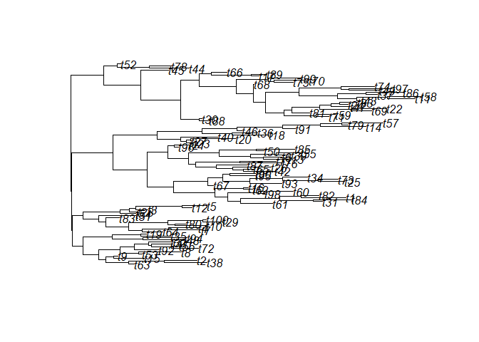

The goal of phyf is to implement a tibble subclass useful for statistical modelling on phylogenetic trees. It mainly implements an phylogenetic flow (pf) object that is essentially a tibble with one or more phylogenetic flow collection (pfc) columns. Phylogenetic flow collection columns are collections of phylogenetic flow paths (pfp) and phylogenetic flow features (pff), which store data on how information flows through a phylogeny from its root node (phylogenies must be rooted to work with phyf) to its tips (and its internal nodes). This allows for easy manipulation of the phylogeny and associated data. The objects are used in the package fibre for phylogenetic branch regression models, a highly felxible framework for comparative analysis and modelling trait evolution across a phylogeny.
Installation
You can install the development version of phyf from GitHub with:
# install.packages("devtools")
devtools::install_github("rdinnager/phyf")Example
library(phyf)
#>
#> Attaching package: 'phyf'
#> The following object is masked from 'package:stats':
#>
#> pf
library(ape)Create a random phylogeny for testing:

Turn it into a tibble-based phylogenetic flow format (pf) using pf_as_pf():
tree_pf <- pf_as_pf(test_tree)
tree_pf
#> # A tibble: 198 × 3
#> label is_tip phlo
#> <chr> <lgl> <pfc>
#> 1 t62 TRUE ◎── 0.51──→ Node2 ── 0.93──→ No…── 0.23──→ Node4 ── 0.14──→ t62
#> 2 t55 TRUE ◎── 0.51──→ Node2 ── 0.93──→ No…── 0.61──→ Node6 ── 0.66──→ t55
#> 3 t74 TRUE ◎── 0.51──→ Node2 ── 0.93──→ No…── 0.61──→ Node6 ── 0.28──→ t74
#> 4 t1 TRUE ◎── 0.51──→ Node2 ── 0.93──→ No… ── 0.99──→ Node7 ── 0.30──→ t1
#> 5 t30 TRUE ◎── 0.51──→ Node2 ── 0.93──→ No…── 0.99──→ Node7 ── 0.91──→ t30
#> 6 t19 TRUE ◎── 0.51──→ Node2 ── 0.93──→ No…─ 0.13──→ Node10 ── 0.52──→ t19
#> 7 t54 TRUE ◎── 0.51──→ Node2 ── 0.93──→ No…─ 0.17──→ Node11 ── 0.98──→ t54
#> 8 t10 TRUE ◎── 0.51──→ Node2 ── 0.93──→ No…─ 0.36──→ Node12 ── 0.13──→ t10
#> 9 t34 TRUE ◎── 0.51──→ Node2 ── 0.93──→ No…─ 0.36──→ Node12 ── 0.02──→ t34
#> 10 t14 TRUE ◎──0.508──→ Node2 ──0.931──→ No…─0.097──→ Node14 ──0.162──→ t14
#> # … with 188 more rowsThis tibble is easy to join data by using the label, which include the tip labels from the phylogeny as well as ‘NodeXX’ for internal nodes, where XX starts a 1 and goes to the total number of internal nodes (the names are generated using ape::makeNodeLabel()). You can also use the node_num column (not yet implemented) to join by the node number, where the node number is based on the node at the end of each phylogeny edge, and uses the traditional ordering of the nodes from the ape package in phylo objects. Usually you will only have data on the tips, and so when joining to the pf object (using e.g. dplyr::left_join()) the internal node rows will recieve NA values. This is the desired behaviour. The missing values are easy to drop for fitting a model, but are useful later when making predictions (that is, ancestral state estimates).
Built-in Datasets
phyf includes a number of built-in datasets to demonstrate the format. For example the AVONET dataset, can be accessed as avonet:
avonet
#> # A tibble: 13,338 × 39
#> label is_tip phlo Speci…¹ Family3 Order3 Total…² Female Male
#> <chr> <lgl> <pfc> <chr> <chr> <chr> <dbl> <dbl> <dbl>
#> 1 Struthio_… TRUE ◎── 2…amelus Struth… Struth… Strut… 8 1 4
#> 2 Rhea_amer… TRUE ◎── 26.…ricana Rhea a… Rheidae Rheif… 5 2 2
#> 3 Rhea_penn… TRUE ◎── 26.…ennata Rhea p… Rheidae Rheif… 6 3 2
#> 4 Apteryx_a… TRUE ◎──26.8…tralis Aptery… Aptery… Apter… 6 2 2
#> 5 Apteryx_m… TRUE ◎──26.8…ntelli Aptery… Aptery… Apter… 4 2 2
#> 6 Apteryx_o… TRUE ◎──26.8…owenii Aptery… Aptery… Apter… 5 2 3
#> 7 Apteryx_h… TRUE ◎──26.8…aastii Aptery… Aptery… Apter… 9 6 3
#> 8 Dromaius_… TRUE ◎──26.8…andiae Dromai… Dromai… Casua… 5 2 3
#> 9 Casuarius… TRUE ◎──26.8…uarius Casuar… Casuar… Casua… 7 2 3
#> 10 Casuarius… TRUE ◎──26.8…nnetti Casuar… Casuar… Casua… 4 1 0
#> # … with 13,328 more rows, 30 more variables: Unknown <dbl>,
#> # Complete.measures <dbl>, Beak.Length_Culmen <dbl>, Beak.Length_Nares <dbl>,
#> # Beak.Width <dbl>, Beak.Depth <dbl>, Tarsus.Length <dbl>, Wing.Length <dbl>,
#> # Kipps.Distance <dbl>, Secondary1 <dbl>, `Hand-Wing.Index` <dbl>,
#> # Tail.Length <dbl>, Mass <dbl>, Mass.Source <chr>, Mass.Refs.Other <chr>,
#> # Inference <chr>, Traits.inferred <chr>, Reference.species <chr>,
#> # Habitat <chr>, Habitat.Density <dbl>, Migration <dbl>, …